СУДЬБЫ БАНДЫ
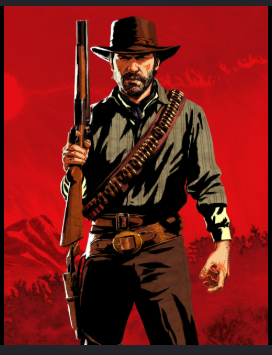
АРТУР МОРГАН
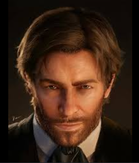
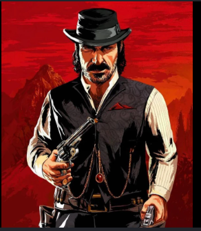
ДАТЧ ВАН ДЕР ЛИНДЕ
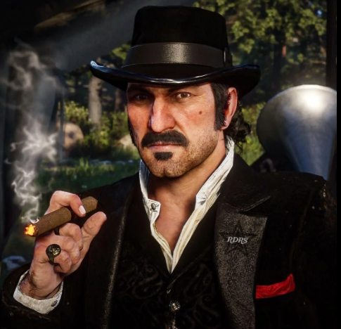
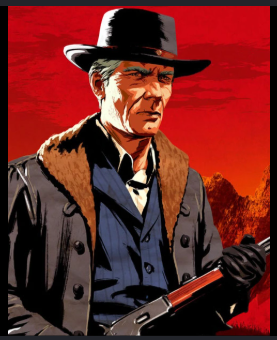
ХОЗЕЯ МЭТЬЮЗ
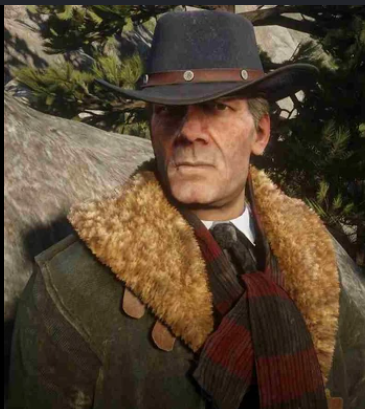
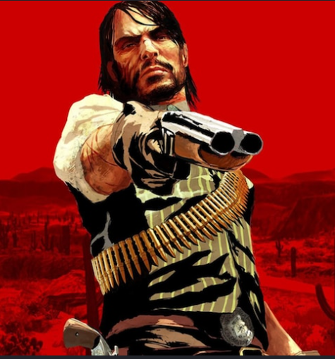
ДЖОН МАРСТОН
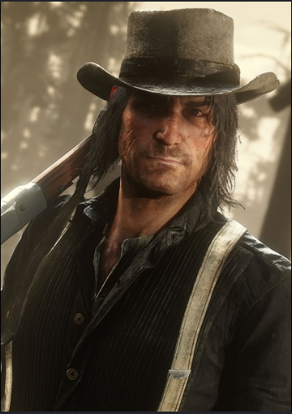
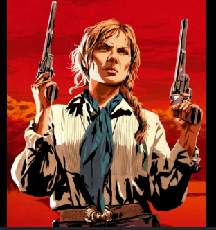
СЭДИ АДЛЕР
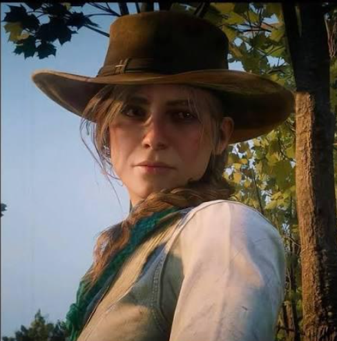
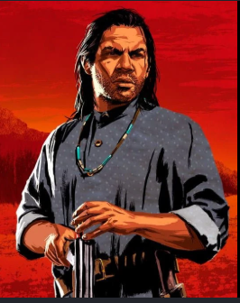
ЧАРЛЬЗ СМИТ
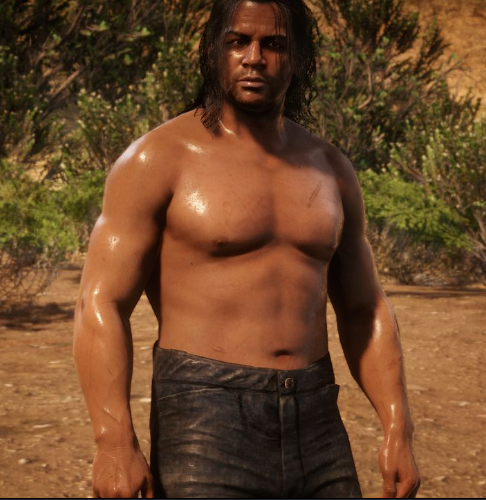
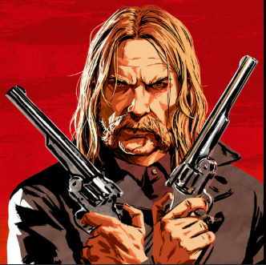
МИКА БЕЛЛ
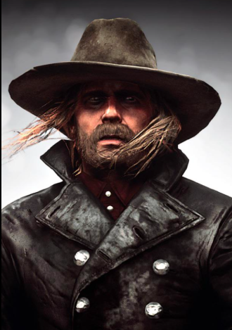
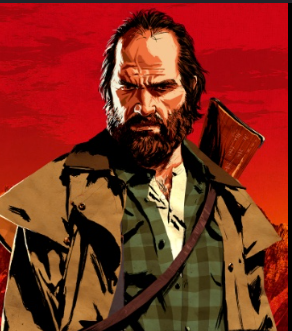
БИЛЛ УИЛЬЯМСОН
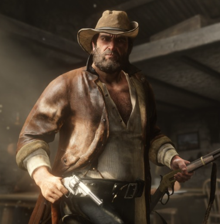
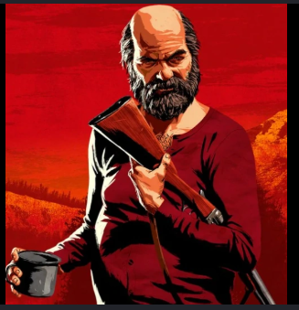
ДЯДЮШКА
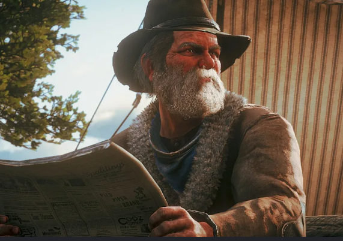
ЗАКАТ ЭПОХИ: ПУТЬ БАНДЫ ВАН ДЕР ЛИНДЕ
1899 год. Дикий Запад доживает последние дни. Агенты Пинкертона, телеграф, железные дороги и растущие города уничтожают вольницу. Банда Ван дер Линде после кровавой перестрелки в Блэкуотере вынуждена бежать в заснеженные горы Амбарино. Лидер, Датч, всё ещё верит в свой идеал: найти землю без законов, где можно жить свободно. Но за каждым их шагом следует голод, предательство и тень прошлого.


Спасаясь от морозов, банда перемещается к сердцу Америки — в леса Нью-Ганновера, пыльные равнины и мрачные болота Лемойна. Артур Морган, главный исполнитель, начинает замечать, как идеалы Датча превращаются в одержимость. Один рискованный налёт сменяется другим, кровь проливается рекой. Внутри лагеря нарастает напряжение: одни слепо верят лидеру, другие — как Хозея или Артур — задаются вопросом, какой ценой даётся «свобода».


История RDR2 — это глубокое размышление о верности, чести и смерти старого мира. Артур видит, как его семья разваливается из-за паранойи Датча, жадности и предательства Мики. Финал игры становится одним из самых сильных моментов в истории видеоигр, показывая, что даже в тёмные времена можно остаться человеком. Red Dead Redemption 2 служит идеальным приквелом, раскрывающим трагедию банды и зарождение легенды о Джоне Марстоне. Это эпос о том, как Дикий Запад умирает, а на его месте рождается безжалостная цивилизация.


С каждым часом игры вы проникаетесь судьбами героев: от мрачного, но благородного Чарльза до сломленной, но несгибаемой Сэди. Даже Мика Белл остаётся важным напоминанием о том, что хаос живёт внутри людей. Сюжет не боится жестокости, но дарит моменты тишины: рыбалка с Хозеей, разговоры у костра, поход в театр. Это и есть магия RDR2 — история, которую помнят годами.